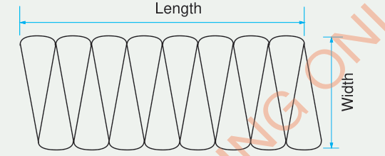

Area of a circle
In this section, you will learn how to find an area of a circle.
Make sure you have a manila paper or other piece of paper, a razor blade or a pair of scissors, a pen or pencil and a pair of compasses.
1. Use the pair of compasses to draw a circle on a manila paper.
2. Cut the circular plane shape out of the manila card. Divide it into 16 equal parts as shown in the following figure:
3. Measure the diameter and use it to calculate the circumference of the circle.
4. Cut carefully all the parts by using a pair of scissors or a razor blade and then arrange the parts to form a rectangular shape as shown in the following figure:

5. Measure the length and width of the rectangular shape and record answers in your exercise book.
6. Divide the calculated circumference of the circle in Step 3 by 2 and then compare your answer with the length of the rectangle. What have you discovered?
7. Divide the circumference of the original circle by 2 and compare the obtained value with the length of the rectangle. What have you discovered?
8. Find the area of the rectangular shape by using the length and width you have obtained.